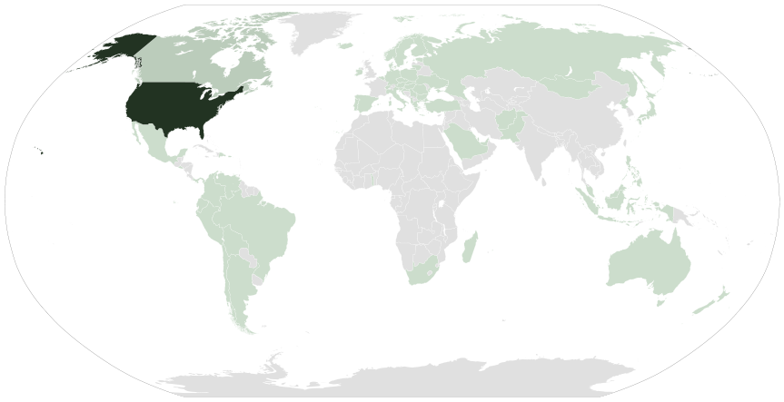
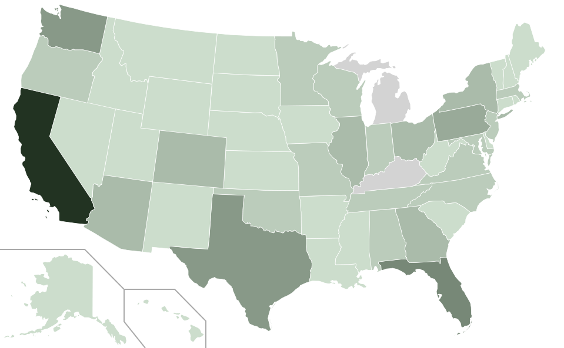

This data is comprised of two questions: "Where are you located?" (country, and state if in the US), and "How large is the size of your hometown?" NOTE: given the limited distribution of the survey, these maps should be taken as maps of the location of the respondents to the survey, rather than maps showing the density of furries in general.

World Population Distribution (raw data)

US Population Distribution (partially corrected with size of city)
Nothing is too surprising here, but it should be noted that the survey was provided in English, and only online. These two factors do help to explain some of the skew towards the United States. While other countries may have large populations of furries, the survey may not have been available in their native languages.